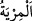
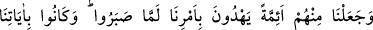
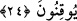

kitaba “kavuştuğundan şüphe etme.” Şüphesiz biz ona Tevrât’ı indirdik.
el-Müfredât’ta der ki: “
” bir işte tereddüd etmektir. “
”ten daha özeldir.
“
” görmek demektir. Râğıb der ki: “Bu kelime göz ve basîretin hissetmesi ile idrâk
etmek hakkında kullanılır.
Fakir (Bursevî) der ki: Eğer: “Hz. Peygamber (a.s.)’ın bu konuda hiç şüphesi
olmadığı halde onun şüphe etmemesinin söylenmesinin mânâsı nedir?” dersen, şöyle
cevap veririm: Burada Mûsâ (a.s.)’ın kitaba kavuştuğundan şüphe içinde olan kâfirlere
üstü kapalı olarak dokundurma vardır. Çünkü onların bu konuda şüpheleri olmasaydı,
Kur’ân’a îman ederlerdi. Zira Tevrat’ta ve diğer ilâhî kitaplarda Kur’ân’ı tasdik eden
şâhidler ve âyetler vardır. Bir peygambere Allah tarafından kitap verilmesi, daha önce
benzeri görülmemiş yeni bir şey değildir ki, bu konuda şüpheye düşsünler. “Eğer onlar
(kâfirler) bunları inkâr ederse şüphesiz yerlerine bunları inkâr etmeyecek bir
toplum getiririz.” (el-En‘âm, 6/89)
et-Te’vîlâtü’n-Necmiyye’ de der ki: “İşâret etmektedir ki Mûsâ (a.s.)’a kitap verilme
sûretiyle Allâh’ın kelâmını işitmek nasip oldu. O halde ey Muhammed! Yarın, onun
gözünün nasîbi olan rü’yetullâha da nâil olacağından şüphen olmasın! Fakat bu, senin
şefâatinle, sana tâbi olmasının bereketi ile ve şu özel duâsı vesîlesiyle ona
lütfedilecektir: “Allâh’ım! Beni Ahmed ümmetinden kıl! Çünkü rü’yetullah sana, ve
sana tâbi olmak dolayısıyla ümmetine mahsustur.”
“Ve onu” Mûsâ (a.s.)’a verdiğimiz kitabı “İsrailoğulları’na” dalâletten kurtuluş için
“hidâyet rehberi kıldık.” Çünkü bu kitap, İsmâiloğulları’na değil, onlara indirilmiş bir
kitaptır ve onlar onunla ibâdetlerini yerine getirirler. Şu âyetteki “insanlar” ifâdesinden
de İsrâiloğulları anlaşılmıştır: “De ki: “Mûsâ’nın insanlara bir nur ve hidâyet olarak
getirdiği … Kitab’ı kim indirdi?” (el-En‘âm, 6/91).
24. Sabrettikleri ve âyetlerimize kesinlikle inandıkları zaman, onların
(isrâiloğulları) içinden, buyruğumuzla doğru yola ileten önderler (imâmlar) tayin
etmiştik.
Bütün işlerde ve durumlarda hak üzere “Sabrettikleri ve” Kitâb’ın/Tevrat’ın içinde
bulunan “âyetlerimize” onlar üzerinde derin derin düşündükleri için veya senin
kavminin içindeki kâfirlerin, Kur’ân hakkında şüpheye düştükleri gibi Tevrat’ın bizim
katımızdan olduğu konusunda şüphe etmeyerek “kesinlikle inandıkları zaman, onların”
yâni İsrâiloğulları’nın “içinden,” bu hususa dâir kendilerine olan “buyruğumuzla” veya
bu hususa onları muvaffak kılarak “doğru yola ileten” Tevrât’ta bulunan şer‘î esaslar,